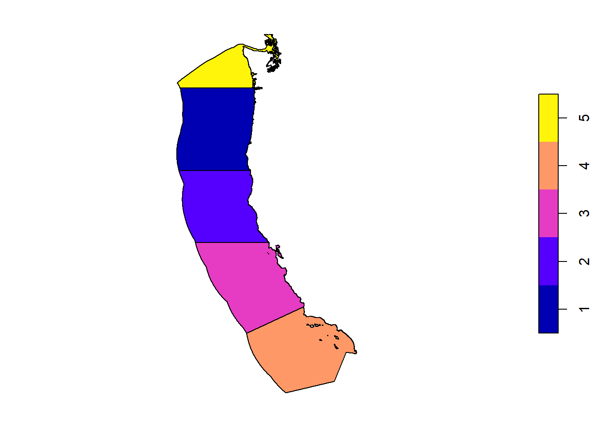
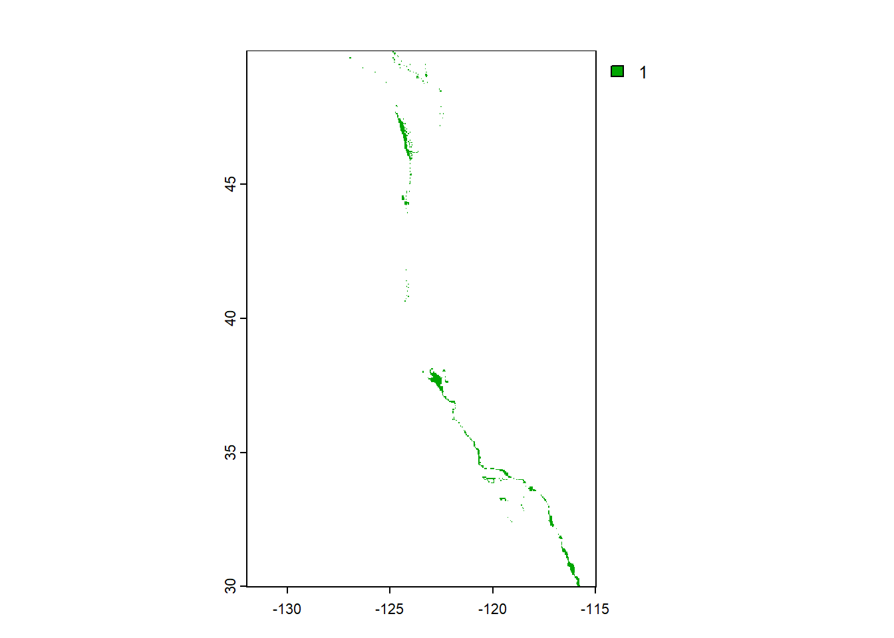
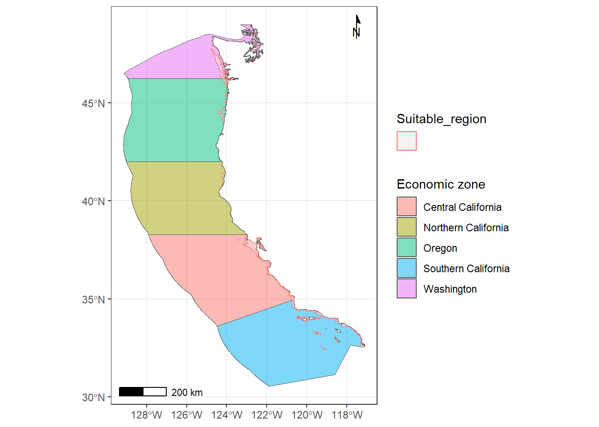
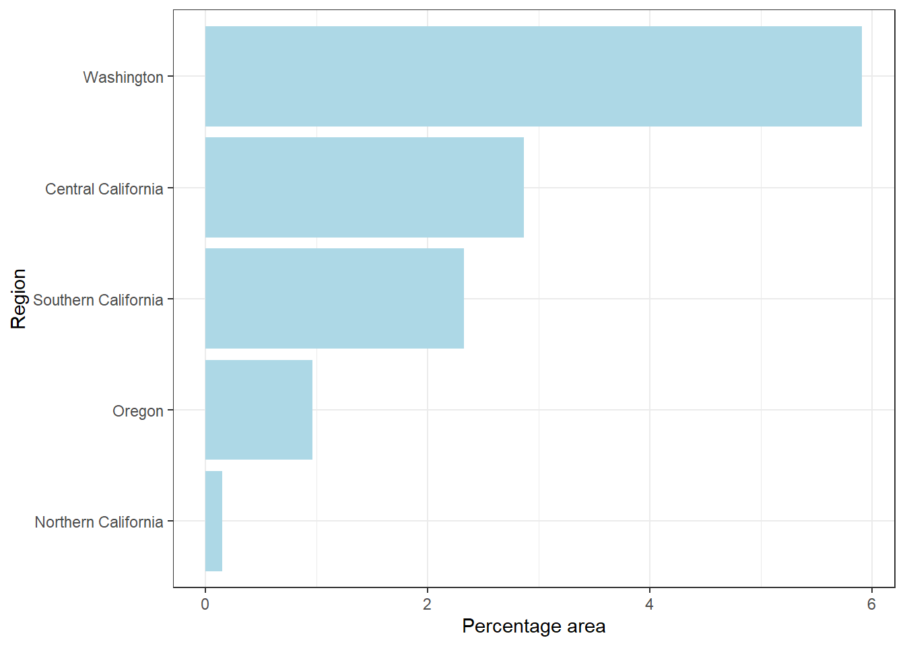
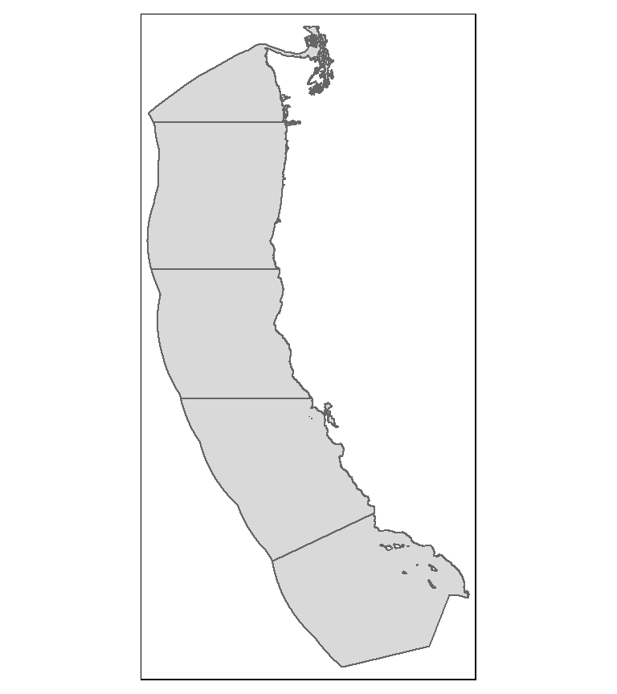
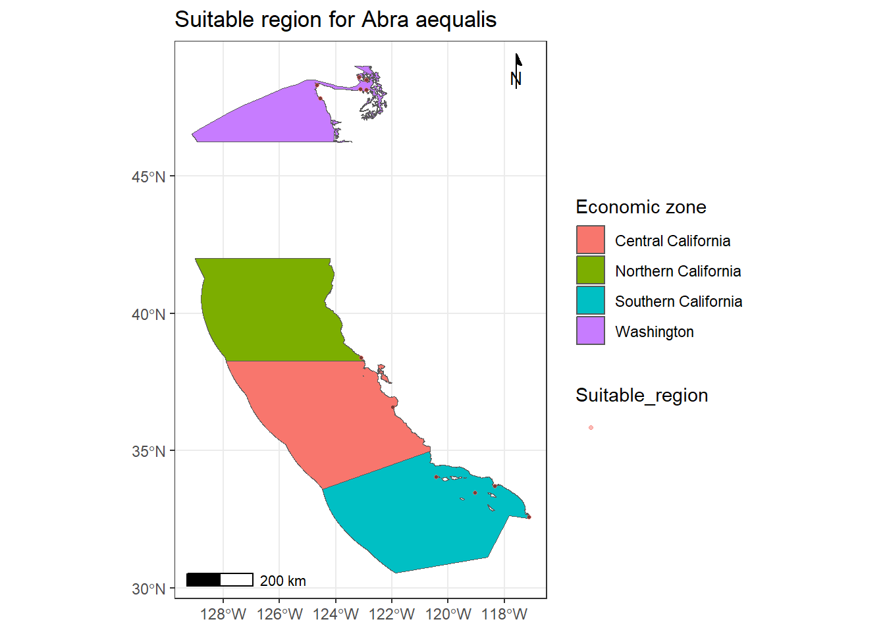

#load required packages
library(stars)
library(terra)
library(tidyverse)
library(tmap)
library(patchwork)
library(ggspatial)
library(raster)
library(here)Exploring Optimal Locations for Marine Aquaculture: A Comprehensive Spatial Analysis
Python
Geospatial
Introduction
Marine aquaculture stands at the forefront of sustainable solutions for meeting the growing global demand for protein. In comparison to conventional land-based meat production, marine aquaculture offers a more eco-friendly approach. Previous research, such as the work by Gentry et al. (2017), has mapped the global potential for marine aquaculture, considering various constraints. In this project, my focus narrows to the Exclusive Economic Zones (EEZ) along the West Coast of the United States, aiming to identify the most suitable regions for developing marine aquaculture, specifically for various species of oysters.
Oysters, known for their unique ecological contributions and nutritional value, thrive under specific conditions. To ensure optimal growth, factors such as sea surface temperature and ocean depth play a crucial role. My analysis leverages data from NOAA and GEBCO to characterize these conditions and pinpoint the most favorable locations for oyster aquaculture.
Data
Sea Surface Temperature
Average annual sea surface temperature data from 2008 to 2012, derived from NOAA’s 5km Daily Global Satellite Sea Surface Temperature Anomaly v3.1, form the basis of our analysis. Data info
Bathymetry
General Bathymetric Chart of the Oceans GEBCO provides data on ocean depth, crucial for understanding the underwater topography.
Exclusive Economic Zones
Maritime boundaries along the West Coast are designated using EEZ data from Marineregions.org. Marineregions.org.
Data Preparation
To initiate the analysis, I load necessary packages and read in the West Coast EEZ shapefile (wc_regions_clean.shp). Additionally, I acquire and combine SST rasters for the years 2008 to 2012 and the bathymetry raster (depth.tif). The data undergoes checks for consistent coordinate reference systems.
##read the data
depth_ocean <- rast(here("posts", "economic_zone", "data","data", "depth.tif"))
##stack the multiple temperature rasters into on
year_2008 <- rast("data/data/average_annual_sst_2008.tif")
year_2009 <- rast("data/data/average_annual_sst_2009.tif")
year_2010 <- rast("data/data/average_annual_sst_2010.tif")
year_2011 <- rast("data/data/average_annual_sst_2011.tif")
year_2012 <- rast("data/data/average_annual_sst_2012.tif")
#stack all these SST data
temperature <- stack(c(year_2008, year_2009, year_2010, year_2011, year_2012))##economic region data
west_coast_shape <- st_read("data/data/wc_regions_clean.shp")
## Reading layer `wc_regions_clean' from data source
## `C:\Users\sujan\OneDrive\Documents\MEDS\web_real\sujan-bhattarai12.github.io\posts\economic_zone\data\data\wc_regions_clean.shp'
## using driver `ESRI Shapefile'
## Simple feature collection with 5 features and 5 fields
## Geometry type: MULTIPOLYGON
## Dimension: XY
## Bounding box: xmin: -129.1635 ymin: 30.542 xmax: -117.097 ymax: 49.00031
## Geodetic CRS: WGS 84
plot(west_coast_shape['rgn_id'], main = NA)
Data Processing
The process involves calculating mean SST for the specified years, converting temperatures to Celsius, and aligning SST and depth data. I reclassify SST and depth data to identify areas suitable for marine aquaculture, particularly for oysters.
#average SST between 2008 and 2012
SST_temperature <- mean(year_2008, year_2009, year_2010, year_2011, year_2012)
#convert to Celsius
SST_temperature <- SST_temperature - 273.15
##match the extent of Depth and SST(change SST to match Depth)
#make the crs same for both of them
SST_temperature <- project(SST_temperature, crs(depth_ocean))
#crs(SST_temperature)==crs(depth_ocean)
#crop the Depth to match SST
cropped_depth_ocean <- crop(depth_ocean, SST_temperature)
#resample to match the resolution
cropped_depth_ocean = resample(cropped_depth_ocean, y = SST_temperature, method = "near") ##Minimum and maximum values are out of rangeIdentify Optimal Locations
The process involves calculating mean SST for the specified years, converting temperatures to Celsius, and aligning SST and depth data. I reclassify SST and depth data to identify areas suitable for marine aquaculture, particularly for oysters.
##reclassify SST
reclass_matrix_sst <- matrix(c(-50, 10, NA, 11, 30, 1, 31, Inf, NA), ncol = 3, byrow = TRUE)
sst_classified <- classify(SST_temperature, rcl = reclass_matrix_sst)
## reclassify Depth
cropped_depth_ocean[is.na(cropped_depth_ocean)] <- 0
reclass_matrix <- matrix(c(-10000, -71, NA, -70, 0, 1, 1, Inf, NA), ncol = 3, byrow = TRUE)
ocean_classified <- classify(cropped_depth_ocean, rcl = reclass_matrix)
#stack both rasters
ocean_sst_stacked = stack(x= c(sst_classified, ocean_classified))
##function for stacking
and_logic <- function(x, y){
ifelse(x == 1 & y == 1, 1, NA)
}# use local function to operate on each cells
suitable_for_sucker_fish <- terra::lapp(rast(ocean_sst_stacked), fun = and_logic)
plot(suitable_for_sucker_fish)
Prioritize Marine Aquaculture Zones
The next step involves calculating the total suitable area within each EEZ. I rasterize the EEZ data, determine suitable cells within each zone, and calculate the total suitable area. The percentage of each zone that is suitable is then computed. The output below shows the percent of area suitable for whole region.
#create dummy variable for operation
v = west_coast_shape #shape file
r = suitable_for_sucker_fish ## raster data
##since lat lon does not measure, projecting it to another for length measurement
target_crs <- "+proj=utm +zone=33 +datum=WGS84 +units=m +no_defs"
r_transformed <- project(r, target_crs)
#resolution on both x and y side, as multplication of them gives area
x = terra:: res(r_transformed)[1]
y = terra:: res(r_transformed)[2]
## extract all points that fall within in the EEZ shape file, and if raster value layers has NA, drop them
eez_zone = terra::extract(r, v) %>%
na.omit()
##calcluate area under each group ID and divide it by 10**6 to convert it to Kilimoeter square.
areas_under_each_zone <- eez_zone %>%
group_by(ID) %>%
count() %>%
mutate(area = (n * x * y)/10^6)
##percentage of each zone that is suitable for zoning
combined_v_areas_under <- inner_join(v, areas_under_each_zone, by = c('rgn_id'='ID')) %>%
group_by('rgn_id') %>%
mutate(percentage_of_area = area/area_km2 * 100) %>%
ungroup()# percentage of area suitable for EEZ
combined_v_areas_under[c('rgn', 'percentage_of_area')]Simple feature collection with 5 features and 2 fields
Geometry type: MULTIPOLYGON
Dimension: XY
Bounding box: xmin: -129.1635 ymin: 30.542 xmax: -117.097 ymax: 49.00031
Geodetic CRS: WGS 84
# A tibble: 5 × 3
rgn percentage_of_area geometry
<chr> <dbl> <MULTIPOLYGON [°]>
1 Oregon 0.963 (((-123.4318 46.23363, -123.4321 46.23…
2 Northern California 0.148 (((-124.2102 41.99843, -124.2099 41.99…
3 Central California 2.86 (((-122.9928 38.28022, -122.9926 38.27…
4 Southern California 2.32 (((-120.6505 34.97431, -120.6502 34.97…
5 Washington 5.91 (((-122.7675 49.00031, -122.7603 48.99…Visualization
To enhance understanding, I visualize the results through various plots and maps. Basemaps provide context, and these visualizations include maps of suitable regions within each EEZ and the percentage of suitable areas.
#prepare the necessary class of the data
cliped_points <- as.polygons(suitable_for_sucker_fish) %>%
st_as_sf()
##clip the area nad make it ready for maps
cliped_points <- st_intersection(cliped_points, combined_v_areas_under)
cliped_points["Suitable_region"] <- ""## plot the suitable regions within each eez
economic_zone <- ggplot(combined_v_areas_under)+
geom_sf(aes(fill = rgn), alpha = 0.5)+
labs(fill = "Economic zone")+
annotation_scale()+
annotation_north_arrow( location = "tr",
height = unit(0.7, "cm"),
width = unit(0.7, "cm"),
style = north_arrow_minimal())
economic_zone +
geom_sf(data = cliped_points, aes(color = Suitable_region), shape = 20, alpha = 0.5) +
theme_bw()+
theme(aspect.ratio = 1.5)
Code
# plot the bar plot to visualize percentage by zone
ggplot(combined_v_areas_under) +
geom_bar(aes(x = reorder(rgn, percentage_of_area), y = percentage_of_area),
stat = "identity", fill = 'lightblue') +
labs(x = "Region", y = "Percentage area") +
theme_bw()+
coord_flip()
Fetch basemaps
There used to be stamenmap function for the Basemap, but recently, there has been a change. The package requires API verification through google. So, I used the data stored inside SF package and loaded as Basemap for the west coast region. This is not the best way, but it does provide clues on which region the each suitable EEZ falls into.
Code
##subset each region and overlay on the coastline
california <- us_geo %>% filter(NAME == 'California')
oregon <- us_geo %>% filter(NAME == "Oregon")
washington <- us_geo %>% filter(NAME == "Washington")##use tmshape to plot the data
tm_shape(combined_v_areas_under)+
tm_polygons(fill = 'percentage_of_area')
# tm_shape(california)+
# tm_text("California", size = 0.8, col = "black", bg.col = "white")+
# tm_borders(col = 'black')+
# tm_shape(oregon)+
# tm_text("Oregon", size = 0.8, col = "black", bg.col = "white")+
# tm_borders()+
# tm_shape(washington)+
# tm_text("Washington", size = 0.8, col = "black", bg.col = "white")+
# tm_borders()Create a Function
This workflow concludes by providing a function for broader applicability. The function allows external users to analyze the suitability of locations for different fish species by specifying temperature and depth requirements. We demonstrate this by running the function for the “Abra aequalis” species. SeaLifeBase
##write whole function out on this
economic_zone_finder <- function(min_temp = min_temp,
max_temp = max_temp,
min_depth = min_depth,
max_depth = max_depth,
fish_species = fish){
depth_ocean <- rast(here("posts", "economic_zone", "data","data", "depth.tif"))
##stack the multiple temperature rasters
year_1 <- rast("data/data/average_annual_sst_2008.tif")
year_2 <- rast("data/data/average_annual_sst_2009.tif")
year_3 <- rast("data/data/average_annual_sst_2010.tif")
year_4 <- rast("data/data/average_annual_sst_2011.tif")
year_5 <- rast("data/data/average_annual_sst_2012.tif")
#perform data manipulation
temperature_stacked <- stack(c(year_1, year_2, year_3, year_4, year_5))
west_coast <- st_read("data/data/wc_regions_clean.shp")
sst_temperature <- rast(mean(temperature_stacked) - 273.15) #(find mean among year and convert to celsius)
##match the extent of Depth and SST(change SST to match Depth)
#check if the crs is same
sst_temperature <- project(sst_temperature, crs(depth_ocean))
##match the extent and origin of surface temperature and ocen depth and resample
cropped_depth_ocean <- resample(crop(depth_ocean, sst_temperature),
y = sst_temperature, method = 'near')
##reclassify surface temperatue
reclass_matrix_sst <- matrix(c(-Inf, min_temp, NA,
min_temp + 1, max_temp, 1,
max_temp + 1, Inf, NA),
ncol = 3,
byrow = TRUE)
sst_classified <- classify(sst_temperature, rcl = reclass_matrix_sst)
## reclassify Depth
reclass_matrix <- matrix(c(-Inf, min_depth, NA,
min_depth, max_depth, 1,
max_depth, Inf, NA),
ncol = 3,
byrow = TRUE)
ocean_classified <- classify(cropped_depth_ocean, rcl = reclass_matrix)
#stack surface temperature with ocean depth
ocean_sst_stacked = stack(x= c(sst_classified, ocean_classified))
##function for applying function across global layers
logic <- function(x, y){
ifelse(x == 1 & y == 1, 1, NA)}
# use local function to operate on each cells
suited_region_for_fish <- terra::lapp(rast(ocean_sst_stacked), fun = and_logic)
#create dummy variable for operation
v = west_coast #shape file
r = suited_region_for_fish ## raster data
##since lat lon does not measure, projecting it to another for length measurement
target_crs <- "+proj=utm +zone=33 +datum=WGS84 +units=m +no_defs"
r_transformed <- project(r, target_crs)
#resolution on both x and y side, as multplication of them gives area
x = terra:: res(r_transformed)[1]
y = terra:: res(r_transformed)[2]
## extract all points that fall within in the EEZ shape file, and if raster value layers has NA, drop them
eez_zone = terra::extract(r, v) %>%
na.omit()
##calcluate area under each group ID and divide it by 10**6 to convert it to Kilimoeter square.
areas_under_each_zone <- eez_zone %>%
group_by(ID) %>%
count() %>%
mutate(area = (n * x * y)/10^6)
## total suitable areas for zoning across all IDS
print(sum(areas_under_each_zone))
##percentage of each zone that is suitable for zoning
combined_v_areas_under <- inner_join(v, areas_under_each_zone, by = c('rgn_id'='ID')) %>%
group_by('rgn_id') %>%
mutate(percentage_of_area = area/area_km2 * 100) %>%
ungroup()
# percentage of area suitable for EEZ
combined_v_areas_under[c('rgn', 'percentage_of_area')]
##polygons
cliped_points <- as.points(suited_region_for_fish) %>%
st_as_sf()
cliped_points <- st_intersection(cliped_points, combined_v_areas_under)
cliped_points["Suitable_region"] <- ""
# plot the points on vector scaled
economic_zone <- ggplot(combined_v_areas_under)+
geom_sf(aes(fill = rgn))+
labs(fill = "Economic zone")+
ggtitle(as.character(paste("Suitable region for", fish_species)))+
geom_sf(data = cliped_points, size = 0.5)+
annotation_scale()+
annotation_north_arrow( location = "tr",
height = unit(0.7, "cm"),
width = unit(0.7, "cm"),
style = north_arrow_minimal())
suitable_eez <- economic_zone +
geom_sf(data = cliped_points, aes(color = Suitable_region), shape = 20, alpha = 0.5) +
theme_bw()+
theme(aspect.ratio = 1.5)
## percent suitable area by region
percent_area <- ggplot(combined_v_areas_under)+
geom_sf(aes(fill = percentage_of_area))+
scale_fill_continuous(low="red", high = "green")+
ggtitle(as.character(paste("Suitable Percentage region for", fish_species)))+
annotation_scale()+
annotation_north_arrow( location = "tr",
height = unit(0.7, "cm"),
width = unit(0.7, "cm"),
style = north_arrow_minimal())
##plot with basemap, to show where each location fall under
# with_basemap <- tm_shape(combined_v_areas_under)+
# tm_polygons(fill = 'percentage_of_area')+
# tm_shape(california)+
# tm_text("California", size = 0.8, col = "black", bg.col = "white")+
# tm_borders()+
# tm_shape(oregon)+
# tm_text("Oregon", size = 0.8, col = "black", bg.col = "white")+
# tm_borders()+
# tm_shape(washington)+
# tm_text("Washington", size = 0.8, col = "black", bg.col = "white")+
# tm_borders()+
# tm_layout(title = "Percentage area with basemap")
return(list(suitable_eez))}Function that create EEZ for a sample species
The function can be used for any marine species around the west coast, if their temperature and depth range is known. Depth is always taken at negative, however there is no need to insert negative values in depth, as the function call automatically makes it negative when a function is called.
##calculate for abra aequalis that survives between 0 to 28 degree depth, and tempetaure up to 73 degrees
economic_zone_finder(min_temp = 0, max_temp = 73, min_depth = 0, max_depth = 28, fish_species = "Abra aequalis")
## Reading layer `wc_regions_clean' from data source
## `C:\Users\sujan\OneDrive\Documents\MEDS\web_real\sujan-bhattarai12.github.io\posts\economic_zone\data\data\wc_regions_clean.shp'
## using driver `ESRI Shapefile'
## Simple feature collection with 5 features and 5 fields
## Geometry type: MULTIPOLYGON
## Dimension: XY
## Bounding box: xmin: -129.1635 ymin: 30.542 xmax: -117.097 ymax: 49.00031
## Geodetic CRS: WGS 84
## [1] 318.8414
## [[1]]
Conclusion
In this comprehensive analysis, I have laid the foundation for identifying optimal locations for marine aquaculture along the West Coast. By considering temperature and depth requirements, I provide valuable insights for sustainable oyster farming. The reproducible workflow also enables future analyses for different fish species. This project contributes to the ongoing efforts to harness marine resources responsibly, ensuring a resilient and sustainable food supply.
References
- Hall, S. J., et al. (2011). Blue Frontiers: Managing the Environmental Costs of Aquaculture. Gentry, R. R., et al. (2017). “Mapping the global potential for marine aquaculture.” Nature Ecology & - Evolution, 1, 1317-1324.
- GEBCO Compilation Group (2022). GEBCO_2022 Grid (doi:10.5285/e0f0bb80-ab44-2739-e053-6c86abc0289c).